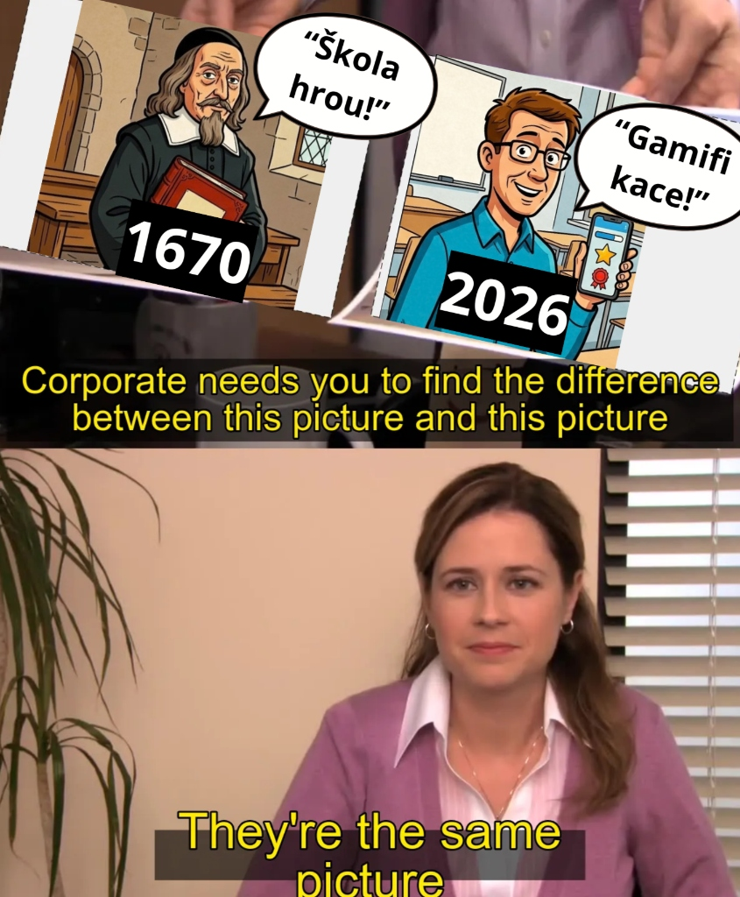

Tvorba automaticky vyhodnocovaných úloh a grafických prvků pomocí HTML
16/10/2026
Základy HTML a komiks
Základy html a převod obsahu do kódu.
Základy HTML
Komiks
15/10/2026
HTML převod výukového materiálu: Principy před aplikacemi
Převod grafického materiálu z minulé hodiny do autentického a přístupného HTML
V dnešní hodině bylo mým úkolem převést grafický materiál z minula (plakát „Důležitější je znát principy, než aplikace“ vycházející z rozhovoru s Evou Fanfulovou z NPI ČR) do autentické, čitelné a přístupné HTML stránky.
Didaktická reflexe a řešení zadaných kritérií:
• Odmítnutí strojové konverze: Původní pokus o automatizovaný převod z PDF (nástrojem typu pdf2htmlEX) vytvořil změť absolutně pozicovaných prvků, která byla zcela nečitelná pro čtečky obrazovky, neresponzivní a kódově neudržitelná. Místo toho jsem vytvořil čistou sémantickou strukturu s hierarchickými styly nadpisů (h1–h3) a výčtem klíčových didaktických zásad.
• Responzivní práce s obrazovým materiálem: Obrazové materiály (fotografie z Helmhaus Zurich z Wikimedia Commons a ilustrace tabulkového procesoru) jsou vloženy responzivně s šířkou v procentech a bez pevné výšky. Vnější okraje (margin-right / margin-left) zabraňují lepení textu a zajišťují plynulé obtékání. Každý obrázek je opatřen popiskem s plnou citací a odkazy se otevírají v novém okně (target="_blank").
• Česká typografie: Celý text byl ošetřen vložením pevných nezlomitelných mezer ( ) za jednoznakovými předložkami a spojkami (k, s, v, z, o, u, a, i) a před jednotkami dle typografických pravidel.
• Korektní označení AI obsahu: Kreslená ilustrace přechodu z papírového sešitu do Excelu vygenerovaná v nástroji ChatGPT/DALL-E je v souladu s akademickou integritou zřetelně označena štítkem AI přímo v popisku obrázku i v závěrečné deklaraci.
Zde byla pro mě tvorba asi nejnáročnější. S nápadem jsem přišel relativně rychle – jednoduchý kontrast myšlenky Jana Amose Komenského a moderního konceptu gamifikace.
Tento nápad jsem konzultoval s AI, konkrétně Claudem, který mi pomohl najít vhodný meme formát pro tuto konkrétní myšlenku a ucelit mou představu.
Následně jsem se pokusil vytvořit meme pomocí AI nástrojů, což ale nikdy nebylo velmi úspěšné a tak jsem se rozhodl vytvořit kompozici sám, v Canvě.

Koláž a obrázek s čitelným textem
U této spíše kreativní tvorby pro mě bylo nejdřív nejzásadnější vymyslet samotný koncept.
Můj konečný výběr byl částečně inspirován šablonou ve Figmě, kterou jsem ale nakonec celou nahradil vlastním obsahem.
Pozadí bylo vytvořeno s pomocí AI tak, aby odpovídalo celkovému vizuálnímu stylu použitých obrázků.
Text doplněný obrázky
Zde jsem se v logickém pořadí odrazil od samotného textu, který jsem vyňal z delšího segmentu na webu NPI.
Následně jsem se rozhodl použít jeden ze šablon ve Figmě, kterou jsem si upravil pro své účely. Jako pozadí k text jsem použil fotku, volně dostupnou na Wikimedia Commons. Následně jsem přímo k tématu vygeneroval pomocí AI specifický vizuální prvek (sešit a excel).
Jako poslední jsem text doplnil ikonou mluvícího člověka z Flaticonu.
28/09/2026
Copywriting
Úkol 2 - Czech and English version
28/09/2026
Vybrané češtinářské jevy z Internetové jazykové příručky AV ČR